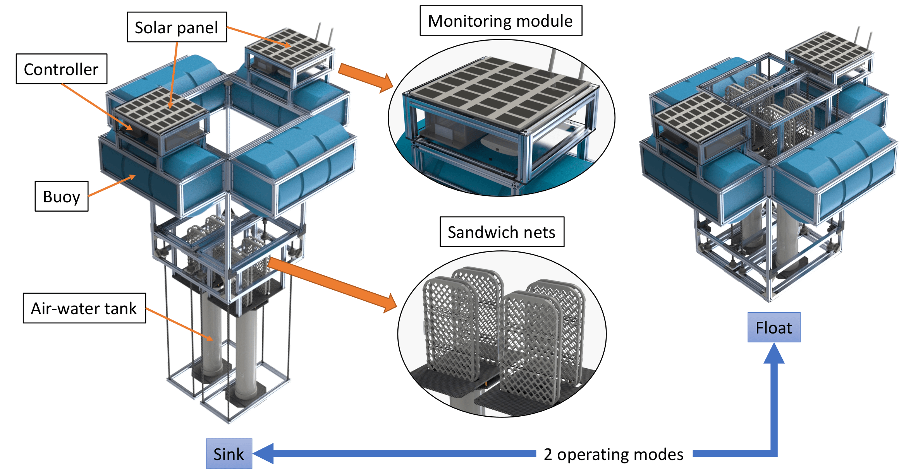
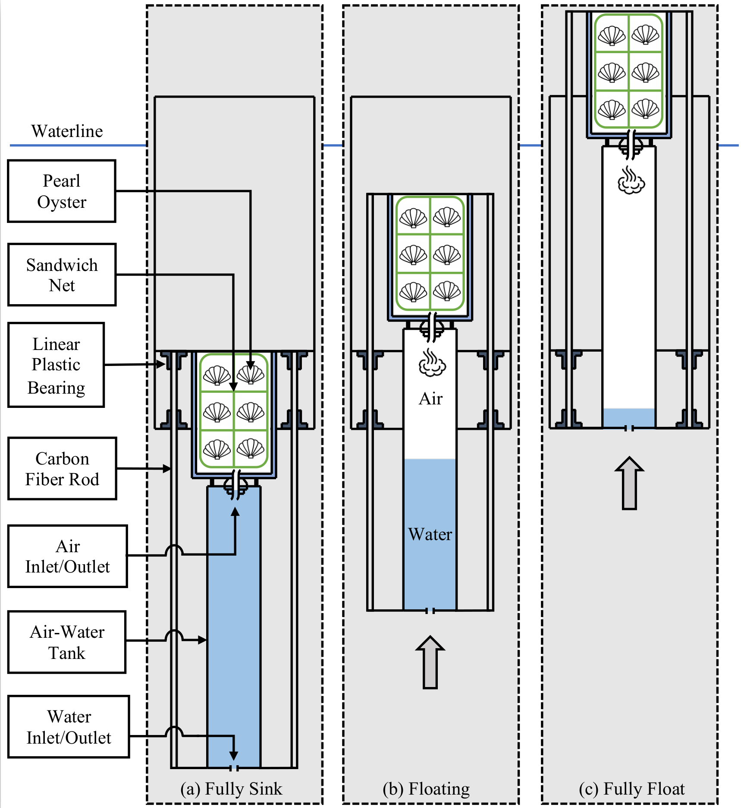
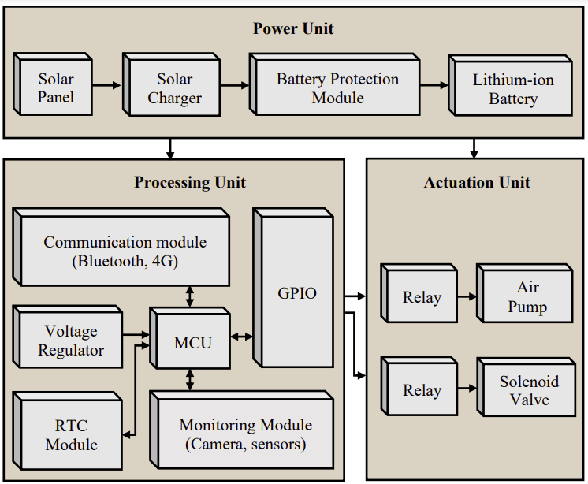
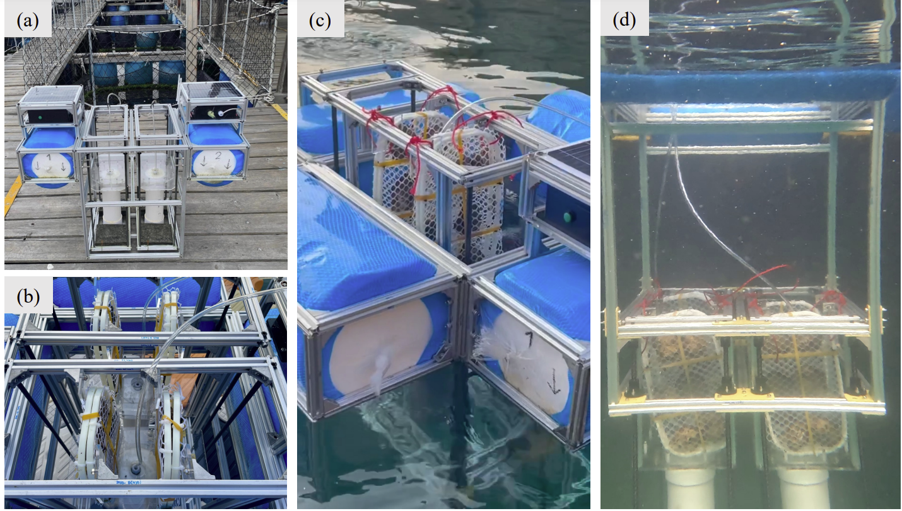

1The Hong Kong University of Science and Technology
2Shenzhen University
IEEE International Conference on Robotics and Automation (ICRA), 2023

The 3D model of the platform.
Abstract
This paper presents a simple yet effective design of a platform to automate the task of shellfish aquaculture,
specifically pearl oysters. Compared to traditional methods, our platform can eliminate the tedious task of
cleaning the pearl oysters due to fouling. Inspired by the low and high tide characteristics of the intertidal
zone, our platform employs an air-water displacement mechanism to periodically float pearl oysters above the
water's surface, exposing fouling organisms to air and sunlight. While pearl oysters have developed the ability
to stay alive during low tide, these fouling organisms cannot survive after prolonged exposure, thus preventing
them from developing. Additionally, the platform provides an alternative approach to grow not only pearl oysters
but also various types of shellfish, consequently benefiting the aquaculture industry. We introduce the design of
the platform and provide a comprehensive analysis. We also demonstrate the practical deployment of the platform for
cultivating pearl oysters.
Video
Mechanical Design

Our platform relies on the air-water displacement mechanism to generate the buoyant force.
The platform comprises three main components: the linear guide, the air-water tank, and the
sandwich net. Each linear guide composes of a couple of linear plastic bearings and a carbon
fiber rod. The air-water tank is a cylinder with two cutouts, one at the top and the other at
the bottom, both acting either as an inlet or outlet. The top cutout is connected to the high-pressure
air source generated by an electric air pump. The bottom cutout is simply a hole to let water flow in
and out of the tank. The sandwich net, where the pearl oysters are inserted during the cultivation
period, is placed on top of the air-water tank.
Electronics system

The system composes of three main units: Power Unit, Processing Unit and Actuation Unit. The whole system relies
on the power unit which provides the power source. The processing unit is responsible for two main tasks as sending
the control signal to the actuation unit to perform the float and sink actions and acquiring data to monitor the
growing process including capturing the images of pearl oysters and collecting sensor information such as water
temperature. The actuation unit consists of an electric air pump, a solenoid valve, and the relays.
Testing and Deployment

(a) Deployment of the platform in Lamma island fish farm in Hong Kong SAR, China.
(b) The pearl oyster nets are inserted into the platform.
(c) The pearl oysters while floating. (d) The pearl oysters
while being submerged underwater
Acknowledgements
This research project is partially supported by an internal grant from HKUST (R9429), the Innovation and Technology Support Programme of the Innovation and Technology Fund (Ref: ITS/200/20FP)
and the Innovation Team Project of Universities in Guangdong Province (No. 2020KCXTD023).